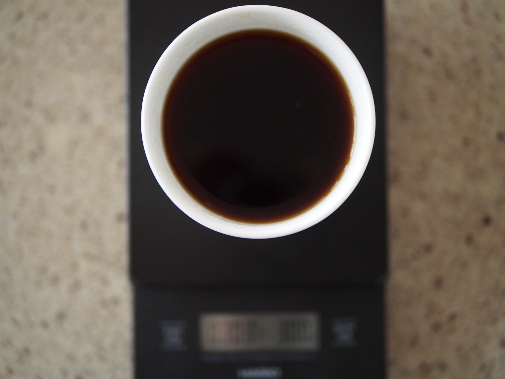
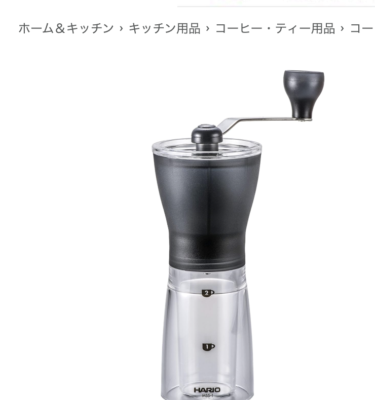

コーヒー特集
——淹れる・保存する・味わう、27本まとめ

手挽きミルで豆を挽くところから、抽出して、保存して、最後はマグカップで飲むところまで。ライナーノーツでこれまで書いてきたコーヒー関連の比較記事を、使う場面ごとに27本まとめました。気になるところから読んでみてください。
新着（未分類）
まだテーマ別に振り分けていない、直近追加分です。
-
 2026.10.20 コーヒーカプセルホルダー、回転式か引き出し式かで選ぶ——1個収納あたり約¥75〜¥83、4点を比較
2026.10.20 コーヒーカプセルホルダー、回転式か引き出し式かで選ぶ——1個収納あたり約¥75〜¥83、4点を比較コーヒーカプセルホルダー4点を比較。価格¥2,980〜¥5,880、回転式・引き出し式・ガラス天板といった形の違い、収納数と対応マシン（ネスプレッソ・ドルチェグスト）の表記、1個収納あたりの価格とレビュー実績を整理しました。
-
 2026.10.11 ダブルウォールグラス、容量・蓋付き・名入れで選ぶ——1日あたり約¥3〜¥4、6点を比較
2026.10.11 ダブルウォールグラス、容量・蓋付き・名入れで選ぶ——1日あたり約¥3〜¥4、6点を比較ボダム3シリーズ・蓋付きタンブラー・名入れギフト向けの二重構造グラス6点を比較。2個セットは1個あたりと、毎日1年使う想定の1日あたり、レビュー実績で整理しました。
-
 2026.10.11 ホット用の紙コップ、ふた付きかどうかで選ぶ——1杯あたり約¥11〜¥35、6点を比較
2026.10.11 ホット用の紙コップ、ふた付きかどうかで選ぶ——1杯あたり約¥11〜¥35、6点を比較ホットドリンク用の紙コップを、ふたの有無と容量（8オンス・12オンス）の違いで6点比較。1個（ふた付きは1組）あたりの価格、レビュー実績で整理しました。
-
 2026.10.10 フレンチプレス、ガラスポットとボトル型で選ぶ——1日あたり約¥5〜¥18、6点を比較
2026.10.10 フレンチプレス、ガラスポットとボトル型で選ぶ——1日あたり約¥5〜¥18、6点を比較ボダムのガラスポット、ビタントニオのボトル型、ハリオの耐熱ガラスなど、フレンチプレス6点を比較。1年使った場合の1日あたりの価格とレビュー実績で整理しました。
-
 2026.10.10 モカポット、定番・カラー・IH対応・オムニアNeoで選ぶ——1年使って1回あたり約¥11〜¥21、6点を比較
2026.10.10 モカポット、定番・カラー・IH対応・オムニアNeoで選ぶ——1年使って1回あたり約¥11〜¥21、6点を比較直火式エスプレッソメーカー（モカポット）を6点比較。定番のモカエキスプレス、アウトレットのレインボー、IH対応のイザベラ、オムニアNeoの違いを、1年使った場合の1回あたりとレビュー実績で整理しました。
-
 2026.10.07 コーヒーカップ＆ソーサー、ガラス・磁器・北欧ブランドで選ぶ——1客あたり約¥1,000〜¥4,400、5点を比較
2026.10.07 コーヒーカップ＆ソーサー、ガラス・磁器・北欧ブランドで選ぶ——1客あたり約¥1,000〜¥4,400、5点を比較KINTOのガラス、耐熱ガラスの手頃なセット、ビアレッティの磁器4客セット、アラビアの北欧食器まで。コーヒーカップ＆ソーサー5点を、1客あたりの価格と毎日使う想定の1回あたりコストで整理しました。
-
 2026.10.05 コーヒースプーン、ステンレス・漆塗り・木製で選ぶ——1回あたり約¥0.5〜¥1.2、5点を比較
2026.10.05 コーヒースプーン、ステンレス・漆塗り・木製で選ぶ——1回あたり約¥0.5〜¥1.2、5点を比較コーヒーや紅茶に添える小さなスプーンを、ステンレスと木製（漆塗り）の素材違いと、食洗機の可否、1本あたりと毎日1年使う想定の1回あたりで整理しました。
-
 2026.10.05 コーヒーミルの掃除ブラシ、馬毛・先細毛・定番ブランドで選ぶ——¥880から¥1,306まで4点を比較
2026.10.05 コーヒーミルの掃除ブラシ、馬毛・先細毛・定番ブランドで選ぶ——¥880から¥1,306まで4点を比較コーヒーミルの粉を掃くブラシを、馬毛・先細毛・電動手動対応・定番ブランドの違いと、週1回・1年使う想定の1回あたりで整理しました。
-
 2026.10.04 ノックボックス、標準・ミニ・木製スタンドで選ぶ——1回あたり約¥4〜¥11、5点を比較
2026.10.04 ノックボックス、標準・ミニ・木製スタンドで選ぶ——1回あたり約¥4〜¥11、5点を比較エスプレッソの粉を捨てるノックボックスを、標準型・ABS製・ミニ・木製スタンド型の違い、1年使った場合の1回あたり、レビュー実績で整理しました。
-
 2026.10.04 デミタスカップ、ガラス・磁器・九谷焼で選ぶ——1回あたり約¥2〜¥12、5点を比較
2026.10.04 デミタスカップ、ガラス・磁器・九谷焼で選ぶ——1回あたり約¥2〜¥12、5点を比較エスプレッソ用のデミタスカップ＆ソーサー5点を、ガラス・磁器・九谷焼の素材違いと、1年使った場合の1回あたり、レビュー実績で整理しました。
-
 2026.10.04 コーヒーを持ち歩くタンブラー、ストロー・蓋・素材で選ぶ——1,000円台から6,000円弱まで6点を比較
2026.10.04 コーヒーを持ち歩くタンブラー、ストロー・蓋・素材で選ぶ——1,000円台から6,000円弱まで6点を比較ストロー付き・セラミック二重構造・蓋付きなど、コーヒーを持ち歩くタンブラー6点を、飲み口・素材・価格とレビュー実績で整理しました。
-
 2026.10.03 ネルドリップのフィルター、¥770のコットンから¥2,208のリネンまで——5点を1回あたりの価格で比較
2026.10.03 ネルドリップのフィルター、¥770のコットンから¥2,208のリネンまで——5点を1回あたりの価格で比較フランネル・コットン・リネンのネルドリップ用フィルター5点を比較。1枚を50回使う想定のネル・リネンは1回あたり約¥5.6〜¥18.2、コットンは1枚あたり約¥12.8です。
-
 2026.10.03 ミルクピッチャー、容量と注ぎ口の形で選ぶ——¥1,460〜¥4,880、7点を比較
2026.10.03 ミルクピッチャー、容量と注ぎ口の形で選ぶ——¥1,460〜¥4,880、7点を比較350ml〜900mlの3サイズ展開から公式デロンギまで7点を比較。価格は¥1,460〜¥4,880、レビューは16〜251件です。
淹れる
抽出まわりの道具です。フィルターの紙質、ドリッパーの素材、ミルの段階数、湯温の精度まで、淹れ方に関わる7本です。
-
 2026.08.19 コーヒードリッパー、素材とペーパー要否で全然違う——陶器・ガラス・樹脂5点を比較
2026.08.19 コーヒードリッパー、素材とペーパー要否で全然違う——陶器・ガラス・樹脂5点を比較ペーパーレスのセラミックフィルターから、定番HARIO V60、波佐見焼のエコフィルター、リバーシブル樹脂タイプまで比較。
-

-
 2026.08.27 電動コーヒーミル、価格差の理由は「段階数」——3,480円からエスプレッソ対応・60段階まで6点を比較
2026.08.27 電動コーヒーミル、価格差の理由は「段階数」——3,480円からエスプレッソ対応・60段階まで6点を比較臼式・コニカル式という基本構造はほぼ共通なのに、価格は3,480円から14,980円まで開きがある。差の理由は段階数とエスプレッソ対応の有無。6点を比較。
-
 2026.08.23 コーヒー用キッチンスケール、0.1g精度はほぼ横並び——タイマー・風袋引き・電源方式で5点を比較
2026.08.23 コーヒー用キッチンスケール、0.1g精度はほぼ横並び——タイマー・風袋引き・電源方式で5点を比較1,980円台から0.1g単位の高精度に対応する時代に、価格差の理由はどこにあるのか。タイマー・風袋引き・電源方式の違いで5点を比較。
-
 2026.08.20 コーヒー用電気ケトル、温度調節の精度で選ぶ——スタンダードからグースネック・折りたたみまで5点を比較
2026.08.20 コーヒー用電気ケトル、温度調節の精度で選ぶ——スタンダードからグースネック・折りたたみまで5点を比較スタンダード型からグースネック、0.5℃単位のコーヒー専用モデル、折りたたみの旅行用まで。温度調節の精度と注ぎ口の形状で比較。
-
 2026.09.22 コーヒードリップスタンド、セットか単体かで全然違う——6点を比較
2026.09.22 コーヒードリップスタンド、セットか単体かで全然違う——6点を比較茶考具・燕三条・HARIO・コモライフ・波佐見焼・YUKIWAの6点を比較。価格帯は¥1,598〜¥9,801でした。
保存する
豆の鮮度を保つための保存容器です。

味わう・演出する
淹れたあとを気持ちよく過ごすための道具です。マグカップ、保温ポット、ミルクの泡立て、カップウォーマーまで4本です。
-
 2026.08.30 コーヒー用マグカップ、素材で持ち心地が全然違う——陶器・ガラス・木製・ステンレス6点を比較
2026.08.30 コーヒー用マグカップ、素材で持ち心地が全然違う——陶器・ガラス・木製・ステンレス6点を比較北欧デザイナーズブランドの陶器から、目盛り付きの耐熱ガラス、名入れの木製ペア、保温できるステンレスまで。素材と使い勝手の違いで6点を比較。
-
 2026.09.22 コーヒー保温ポット・カラフェ、温かい用と水出し用で全然違う——5点を比較
2026.09.22 コーヒー保温ポット・カラフェ、温かい用と水出し用で全然違う——5点を比較MARNA・IwaiLoft（2種）・HARIO（2種）の5点を比較。価格帯は¥1,650〜¥4,400でした。
-
 2026.09.23 USBカップウォーマー、温度調整の段階数で全然違う——5点を比較
2026.09.23 USBカップウォーマー、温度調整の段階数で全然違う——5点を比較valuefactory・lebenwood・one-more-store・mitas・lilyluceの5点を比較。価格帯は¥1,290〜¥2,999でした。
-
 2026.09.22 ミルクフォーマー・ミルク泡立て器、電源方式とメーカーで全然違う——6点を比較
2026.09.22 ミルクフォーマー・ミルク泡立て器、電源方式とメーカーで全然違う——6点を比較honnete・Kalita・HARIO（2機種）・MUSON・andneの6点を比較。価格帯は¥1,512〜¥2,980でした。
コーヒーメーカーで選ぶ
同じシリーズを色で選びたいとき向けの2本です。ブラックとホワイト、それぞれのブランドを比較しています。
-
 2026.09.16 【推し色特集】ブラックのコーヒーメーカー——3ブランドを比較
2026.09.16 【推し色特集】ブラックのコーヒーメーカー——3ブランドを比較siroca・タイガー・メリタから、黒いコーヒーメーカーを集めました。全自動かドリップ式か、ミルの有無、価格帯の違いで3ブランドを比較しています。
-
 2026.09.15 【推し色特集】ホワイトのコーヒーメーカー——4ブランド4点を比較
2026.09.15 【推し色特集】ホワイトのコーヒーメーカー——4ブランド4点を比較siroca・レコルト・メリタ・タイガーから、白いコーヒーメーカーを集めました。抽出方式・杯数・保温の仕組みの違いで4ブランド4点を比較しています。
他のジャンルの記事はトップページのカテゴリからも探せます。